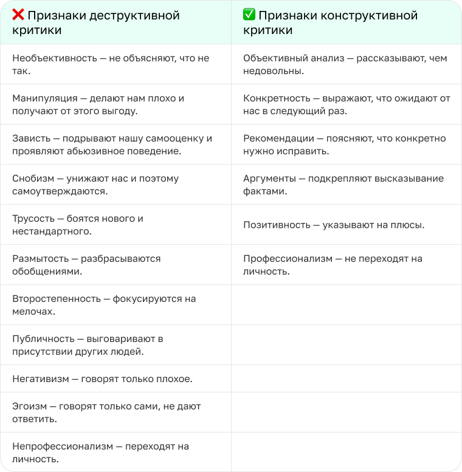

Мы часто воспринимаем критику болезненно. Так происходит из-за особенностей менталитета и общепринятых высказываний: «Всё плохо, надо переделать», «Что ни день, то у вас ошибка»
или «Слушайте, ну такого я ещё в жизни не видел»
.
В нашей жизни критика будет всегда. Если мы будем остро реагировать на каждое замечание и ещё неделю перед сном прокручивать, что нужно было ответить, все силы уйдут на борьбу с негативом и переживаниями.
Мы посмотрели открытое занятие «Если вас критикуют: как не расстраиваться и находить точки роста» и разобрались, почему критику сложно воспринимать, как себя вести и научиться самому конструктивно критиковать. Делимся с вами главным.
Критика — это топливо для развития. Но иногда коллеги дают обратную связь в неудачном формате. Тогда нам становится сложно её воспринимать. Так получается, что критика мешает выполнять задачи, портит отношения с людьми и делает нас раздражительными и неуверенными.
Для этого есть четыре причины:
Критики часто переходят на личности. Вместо того чтобы сказать: «У вас не получился этот текст»
, говорят: «Вы плохой автор»
. Так укрепляется мысль, что с нами что-то не так.
Перфекционистам кажется, что у них нет права на ошибку. Внутренний критик постоянно давит. А если от другого человека приходит отрицательная обратная связь, то сил отвечать двум негативным голосам не хватает.
Если руководитель говорит, что статья не удалась, наш внутренний голос может достроить мысль: «Ага, меня сначала лишат премии, а потом и уволят»
. Так мы перестаём чувствовать себя в безопасности.
Чем сильнее усталость или истощённость, тем мы чувствительнее к критике. Нам не хватает сил на борьбу с негативом, потому что они уходят на то, чтобы закрывать хотя бы базовые потребности организма.
Мы пропускаем слова другого человека через свои фильтры: опыт, эмоциональное и физическое состояние, самооценку, убеждения и собственные представления. Если они работают недостаточно хорошо, нам может казаться, что нас хотят обидеть, расстроить, вылить негатив в нашу сторону и показать свою власть.
Поэтому важно различать виды критики, чтобы прогонять через свои фильтры и понимать, как реагировать — пропускать слова мимо, выделять полезную часть или принимать все рекомендации.

Хоть нам и тяжело слышать о своих ошибках, важно понимать, что критика помогает двигаться вперёд. Помните, что критик — это человек со своими переживаниями и страхами. Ему тоже может быть непросто говорить с нами. Например, он может быть конформистом, переживать из-за непониманий и негативных последствий, бояться конфликта и отвержения и быть неуверенным в себе и своих словах.
Поэтому важно:
Помните, что критика к вашей личности не имеет отношения, только к поступкам. Собеседник пытается изменить не вас, а ваши действия. Не принимайте негатив близко к сердцу, чтобы сохранить нервные клетки.
Разделите слова критика на две категории: его эмоции и что он старается донести до вас. Отбросьте эмоциональную часть и выделите суть. Иногда собеседники используют механизм психологической проекции. То есть говорят не про вас, а про себя. Например, человек кричит не потому, что вы так сильно не справились с задачей, а потому, что сам устал и не знает, как выразить свою мысль.
Необходимо дать команду мозгу, что пора остановиться и поразмышлять, что до вас хотят донести. Скажите собеседнику прямо, что не готовы продолжать разговор сейчас и вернётесь позже.
Если за последний год больше пяти человек указывали вам на одну и ту же ошибку, скорее всего, это повод её проработать. Если меньше пяти человек — скорее всего, люди использовали механизм психологической проекции. То есть говорили о себе и своих проблемах.
Помните, что у вас всегда есть право поменять работу, перейти в другой отдел или хотя бы сказать, что вам неприятно слушать обратную связь в негативном формате.
Поймите, что собеседник — не ваш враг. В его словах, скорее всего, есть зерно мудрых мыслей, которое нужно выделить. Если нет, тогда проигнорируйте негативное проявление в вашу сторону.
Решите, что будете менять в своём поведении и как. Постройте в голове потенциальные ситуации, в которых проявите себя по новой.
Если вас сильно задевает то, что говорит собеседник, стоит углубиться в себя. Постарайтесь разобраться, в чём мотивы вашей острой реакции. Если чувствуете, что начинаете закапываться и не можете выбраться, обратитесь за помощью к специалисту. Например, психологу или психоаналитику.
Прежде чем начать разговор, подготовьтесь. Подумайте, что вы хотите сказать, почему это важно проговорить сейчас и какие слова больше всего подойдут.
Затем убедитесь, что собеседник готов обсуждать. Открыто скажите о своём намерении поговорить. Чтобы дать конструктивную обратную связь, используйте формулу: «факт → влияние → “Я бы хотел…”». Слушайте и задавайте вопросы. Держите в голове цель — «Зачем мы это сейчас обсуждаем? Чтобы что?»
Рассмотрим на примере: сотрудник опоздал на 20 минут на совещание.